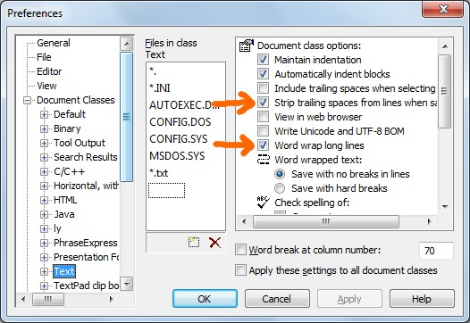

[go] XBNPE downloads[go] User-discussion forum[go] The most-up-to-date documentation[go] XBN-PhraseExpress is released under the LPGL 2.1 Full license text[go] Installation and requirements
XBN-PhraseExpress is a large set of generically useful MS Windows scripting tools written in PhraseExpress, using TextPad as its foundation. TextPad is the plain-text editor written by Helios Software Solutions. XBNPE is significantly for creating phrases in TextPad--and therefore most phrases are logically only-callable in TextPad. There are, however, many useful features for those developing phrases in any environment, including the PhraseExpress application itself.
There is a significant setup necessary in order for XBN-PhraseExpress and TextPad to communicate properly, but it is largely a one-time-only process.
XBNPE basics:
[go] I only edit my phrases in TextPad (also defines TextPad-bootstraps)[go] Global directory configuration[go] XBN-PhraseExpress: global configuration[go] XBNPE-Key-Presses (XKP)[go] TextPad built-in commands (TPKC) project[go] Plain-text phrase-files: Their format and how to import.[go] The main types of phrases used in the XBN-PhraseExpress project: Commands, Actions, Variables, Phrase-creators[go] 'xh...' phrase-creator ddmenu (and the XBNPE user-menu)[go] XBNPE-Phrase-creators (PPC) project[go] Phrase "compression": 'c2pl' and related utilities[go] Call Phrase-name in ClipBoard (CPCB)[go] Debugging utilities[go] File manipulation[go] Search and replace (SNR): Find, replace, find-in-files, go-to dialog, and bookmarks[go] Advanced division (divisor/quotient)[go] sQuare-Bracketed Lists (QBL): Plain-text string iterator[go] Word-wrap with state[go] Phrase-name ddmenu creation utilities (PMDM)[go] Specific PhraseExpress built-in functions, including in-depth documentation on the COND tag.[go] Trouble-shooting and work-arounds[go] My most important Pex enhancement requests[go] Understanding and determining phrase-set syntax[go] Example code framework (XCF) project[go] MINV-Commands: Automated creation and management of repeating commands[go] Large project database framework (LPD) project.[top] XBN-PhraseExpress is released under the LPGL 2.1XBN-PhraseExpress: Large set of generically useful scripting tools for MS Windows, written in PhraseExpress and TextPad.
Copyright (C) 2013 Jeff Epstein
This library is free software; you can redistribute it and/or modify it under the terms of the GNU Lesser General Public License as published by the Free Software Foundation; either version 2.1 of the License, or (at your option) any later version.
This library is distributed in the hope that it will be useful, but WITHOUT ANY WARRANTY; without even the implied warranty of MERCHANTABILITY or FITNESS FOR A PARTICULAR PURPOSE. See the GNU Lesser General Public License for more details.
You should have received a copy of the GNU Lesser General Public License along with this library; if not, write to the Free Software Foundation, Inc., 51 Franklin Street, Fifth Floor, Boston, MA 02110-1301 USA
[top] XBN-PhraseExpress: Global directory configurationThere are two global directory configuration variables that must be configured before XBN-PhraseExpress can function:
All directory-path values, in this or in any directory-configuration variables throughout XBN-PhraseExpress:
'\').'"'). This implies that any characters (such as spaces) normally requiring the path be surrounded by double-quotes are unacceptable.(*comments*) in the phrase-body.{#insert zROOT_DIR_XBNPE_MAIN}/xbnpe_xkp/configuration/xbnpe__directory_config_edit_this.px.txt
XBNPE: Parent folder >
XBN-PhraseExpress >
XBNPE-Key-presses (XKP) & basic utilities >
Directory and global configuration[BACK] XBNPE: Global-directory-config: zROOT_DIR_XBNPE_PARENTThe parent directory in which xbnpe source-code root was installed. Such as:
C:\programming\phrase_express\
Using this example, the TextPad built-in command (TPKC) project-root is
C:\programming\phrase_express\xbnpe\main\textpad__tpkc\
This value is critical to most XBN-PhraseExpress projects. For example, neither the XKP or TPKC-build processes can function without this.
zROOT_DIR_XBNPE_MAINzROOT_DIR_XBNPE_MAIN is a directory-variable is derived from
zROOT_DIR_XBNPE_PARENT
and is the location where the main and hard-coded XBNPE-code resides (I directly create these phrases). Specifically, zROOT_DIR_XBNPE_MAIN is equal to
{#insert zROOT_DIR_XBNPE_PARENT}xbnpe\main\
Do not edit the value of zROOT_DIR_XBNPE_MAIN !
zROOT_DIR_XBNPE_AGzROOT_DIR_XBNPE_AG is a directory-variable is derived from
zROOT_DIR_XBNPE_PARENT
and is the location where the main auto-generated phrases are stored (these phrases are created by other phrases). Specifically it is equal to
{#insert zROOT_DIR_XBNPE_PARENT}xbnpe\auto_generated\
Do not edit the value of zROOT_DIR_XBNPE_AG !
[BACK] XBNPE: Global-directory-config: zROOT_DIR_XBNPE_PARENTzWIN_DIR_DESKTOPRecommended but not required. I personally sometimes put test data on the desktop. If your Windows user-name, and therefore your desktop path, has spaces in it, it conflicts with the above no-double-quotes rule, and therefore this value won't be usable to you.
Example value:
C:\Users\jeffy\Desktop\
Tip: To get your desktop's path, right-click on any non-standard (not the Recycling Bin or Network Neighborhood, for example) file on your desktop, while holding the shift-key. Select "Copy as path", paste it into a text document, and eliminate the quotes and file-name.
[top] XBN-PhraseExpress: global configuration{#insert zROOT_DIR_XBNPE_MAIN}/xbnpe_xkp/configuration/xbnpe__global_config_edit_this.px.txt
XBNPE: Parent folder >
XBN-PhraseExpress >
XBNPE-Key-presses (XKP) & basic utilities >
Directory and global configurationGlobal configuration variables required in order for anything in XBN-PhraseExpress to function. These values are set during (see: TextPad-and-XBNPE installation).
| Variable | Description and requirements |
zzTPTxtDefaultWordWrapOnOrES |
Plain-text phrase-files are named with the postfix ".px.txt" and are therefore included in TextPad's "Text" document class. If the default word-wrap state for the text document class is
|
zzTPTxtDefaultStripTrailingWSOnOrES |
If the Text document class setting "Strip trailing spaces from lines when saving" is
(Screenshot below) |
Warning: Any processes in XBNPE that save files (particularly the larger build-processes, such as TPKC) will fail unless "Word wrap text > Save with no breaks in lines" is selected.

[top] XBN-PhraseExpress: DownloadsFor those composing their own phrases, using and calling some of the XBNPE-projects:
xbnpe_0p8p1_beta.zip
This contains all documentation, plain-text phrase-files, PhraseExpress "*.pxp" files, and some other files that may be useful to the general user.
For those making changes and additions to the XBNPE-project itself:
https://github.com/aliteralmind/xbnpe/archive/master.zip
In addition to the above, this contains all git-related files, and all build-only related documents (such as video-metadata for youtube, and build.xml).